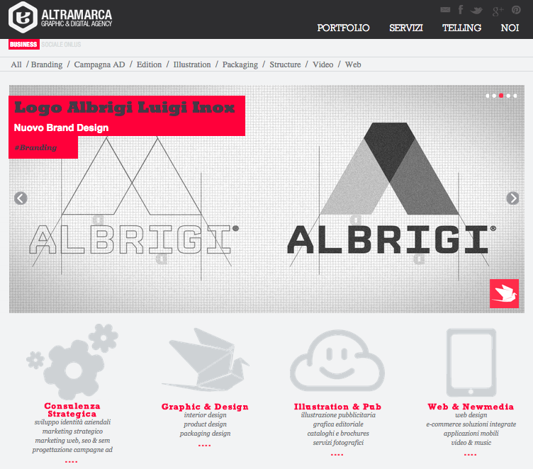
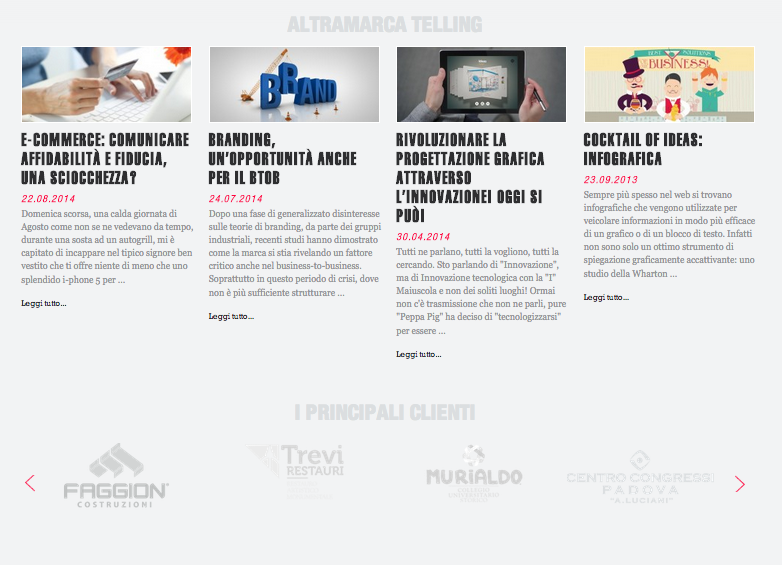
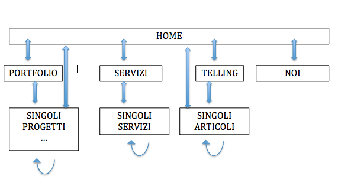

Filira Alessandro mat.1023662
Rapporto Usabilità sito: Altramarca - Periodo:Ottobre 2014
Abstract
Il sito del quale si farà l'analisi di usabilità è il sito di un'azienda di Padova, l'azienda è uno studio grafico e web agency. Visto il tipo di azienda mi aspetto di trovare informazioni sui servizi offerti e alcuni esempi di lavori svolti.
2) Analisi Iniziale
Dando una rapida occhiata al sito appena caricato si può vedere in maniera molto evidente una forte presenza del rosso che sembra essere il colore identificativo dell'azienda, un nero antracite e un grigio chiaro che contrasta poco coi colori di supporto quali bianco o altre tonalità di grigio.
Inoltre, ad una vista più attenta, si nota che non vi è molta attenzione all'accessibilità: non c'è la possibilità di ingrandire o ridurre la grandezza dei caratteri, alcuni colori hanno poco contrasto tra loro e non vi è la possibilità di passare ad una versione ad alto contrasto per persone che hanno problemi con le cromie.
Ma analizziamo più approfonditamente la home page.
{kind=link}
Struttura Home
{kind=link}
Header
Appena si entra nel sito ci si trova di fronte alla classica homepage: nell'header della pagina troviamo:
- In alto a sinistra il logo dell'agenzia che al click riporta in homepage, anche quando ci si trova già in homepage;
- In alto a destra i link per il collegamento ai social network dell'agenzia il cui click apre una nuova scheda o finestra alla pagina ufficiale nel social network selezionato;
- Sotto i link per i social vi è il menù principale per muoversi nelle sezioni più importanti
- PORTFOLIO: una pagina che contiene i lavori più interessanti proposti dall'azienda. (vedi img)
- SERVIZI: Una serie di servizi divisi in 4 categorie (Consulenza Strategica, Graphic & Design, Illustration & Publishing, Web & Multimedia) per le quale sono presenti alcuni articoli di presentazione del singolo servizio con titolo e descrizione. (vedi img)
- TELLING: è la parte di blog dell'azienda nella quale ci sono articoli riguardanti i vari ambiti seguiti dalla stessa: tecnologia, consulenza, strategia, ecc. (vedi img)
Nella sezione di blog è presente anche un campo di ricerca che permette di selezionare oltre che per parola chiave, anche per autore, archivio cronologico e tag. (vedi img)
La ricerca però è limitata solo agli articoli relativi al blog non alla sezione servizi o portfolio. - NOI: In questa sezione sono presenti la filosofia dell'azienda, il metodo di lavoro e la politica sulla privacy.
È inoltre possibile prendere contatto con lo studio tramite vari form: "Parla con noi", "Lavora con noi", iscriversi alla newsletter e "Chiedi un preventivo". (vedi img)
{kind=link}
{kind=link}
{kind=link}
{kind=link}
{kind=link}
Tornando alla homepage, tra l'header, che è impostato in posizione fissa e segue lo scroll della pagina, e lo slideshow troviamo due piccole voci per cambiare la tipologia del sito: da progetti e offerte per gli enti sociali a offerte per le aziende.
Differenziando così il target a cui si vuole rivolgere.
Continuando a scendere si trova un altro menù (un sotto menù del portfolio) le cui voci suggeriscono i diversi ambiti di intervento e le varie categorie di progetti.
Slideshow
In successione si trova uno slideshow di immagini e testi con il titolo del progetto, un sottotitolo e la categoria di intervento, una (o più) tra quelle presenti nel sotto menù.
Questa sezione viene posizionata indicativamente al centro dello schermo e occupa gran parte della finestra, inoltre lo sfondo rosso sul quale viene presentato il titolo attira l'attenzione dell'utente il cui occhio cade sul titolo dello slide invitandolo a scoprire di di più.
Al click si carica la pagina relativa al progetto presentato.
Servizi
Appena un utente entra nel sito indicativamente vede il sito fino alla fine dello slideshow e si presuppone che veda anche un piccolo pezzo di questa sezione (un po' meno di ciò che si vede nell'immagine soprastante).
Tale sezione presenta le 4 macro categorie in cui vengono divisi i servizi offerti dall'azienda.
In particolare, al click, in base alla sezione si finisce a una certa altezza della pagina servizi, la stessa presente anche nel menù principale.
{kind=link}
Progetti
Come si può vedere dall'immagine, dopo lo slideshow e i servizi si hanno 6 progetti recenti con relativo link alla pagina di presentazione del singolo progetto.
Per ogni progetto è presente un'immagine del lavoro che fa da sfondo, un titolo, un sottotitolo e uno o più tag del sotto menù, nella stessa maniera in cui sono presentati nello slide.
Ogni progetto ha inoltre un'icona di riferimento che indica a quale dei 4 macro servizi appartiene, in modo che l'utente possa associare il lavoro a una determinata area di intervento.
Periciò ogni progetto ha associato un macro servizio e una categoria di lavoro; per esempio un sito web sarà associato alla categoria "Web" e servizio "Web & Newmedia", ma anche la realizzazione di un video sarà associata allo stesso servizio con però categoria "Video" al post di "Web".
Questa classificazione non è immediatamente comprensibile per un semplice utente.
Viene riservata una piccola zona anche per permettere ai visitatori di seguire le pagine social direttamente dal sito senza dover uscire e perdere il riferimento a ciò che stavano visitando.
{kind=link}
Telling
Continuando a scendere nella home page c'è una sezione telling con gli ultimi 4 articoli inseriti nel blog del sito aziendale. Ovviamente gli articoli sono presentati con un'immagine, un titolo e un piccolo estrapolato del testo iniziale dell'articolo.
Clienti
Come ogni sito aziendale sono presenti i principali clienti seguiti dallo studio.
Sono presentati con uno slide di 4 in 4 e al click viene aperta una nuova finestra he rimanda al sito del cliente.
{kind=link}
Footer
Infine il footer è diviso in tre colonne nelle quali sono presenti i dati anagrafici con indirizzi, numeri di telefono e fax per contattare l'agenzia; una carrellata delle ultime foto condivise e caricate in pinterest (il social network per le foto); gli ultimi 3 tweet effettuati e caricati da twitter.
Nonostante l’articolo 2250,7 co. del Codice Civile modificato dall’articolo 42 della legge 88 del 2009 non preveda un obbligo per le snc, sono stati comunque inseriti le seguenti informazioni:
- denominazione (ragione sociale);
- sede della società;
- ufficio del Registro delle Imprese presso la quale risulta iscritta ed il relativo numero di iscrizione;
Contenuti
La scelta delle immagini in bianco e nero credo sia dovuta proprio al fatto che, essendo presenti molte immagini nel sito, l'utente si sarebbe sentito spaesato a causa del troppo colore e avrebbe abbandonato la pagina con buona probabilità.
Utilizzando invece colori pieni come il rosso e il nero l'utente viene guidato e gli viene mostrato ciò che i proprietari del sito vogliono.
Nelle pagine interne al sito il layout grafico è molto simile a quello presente in homepage.
Per quanto riguarda la risoluzione del problema persistente lost in navigation non è stata utilizzata la soluzione dei breadcrumbs ma semplicemente viene evidenziato nei due menù a quale categoria o sotto categoria la pagina che si sta visitando appartiene.
Un altro problema riscontrato nel sito è il seguente: i link che aprono e caricano siti esterni vengono aperti in nuove finestre. Questo potrebbe indurre all'utente uno stato di smarrimento in quanto il back button non funziona più e lascia la pagina di partenza in background.
I pop-up non sono utilizzati se non uno realizzato in jquery (una finestra modale) per l'iscrizione alla newsletter.
Questo compare solo se è l'utente stesso che clicca sull'icona della busta della lettera posta in alto a destra vicino all'area dedicata ai social network. Questa apertura è un effetto dato da un'azione dell'utente che giustamente dopo un click si aspetta un'azione, quale essa sia.
Tale pop-up è dotato di una x molto evidente per permettere di far capire come chiudere la schermata.
{kind=link}
Dopo avere navigato per il sito se ne percepisce la struttura ad albero che può essere riassunta in questa immagine:

Dalla home page si hanno 4 categorie di contenuti le quale poi hanno i singoli contenuti con i collegamenti per tornare alla home page, alla categoria superiore oppure a altri singoli progetti o servizi.
Quindi è possibile accede a un singolo contenuto da molte strade, la mancanza dei breadcrumbs è un limite abbastanza sentito dall'utente poiché non ha traccia della strada fatta.
Uno dei contenuti più importanti del sito sono i progetti.
Da questo esempio possiamo vedere che essendo un sito di uno studio grafico i principali contenuti sono immagini. Tutti i progetti infatti sono presentati come l'esempio precedente:
{kind=link}
- Titolo
- Sottotitolo
- Categoria
- Una serie di immagini che mostrano il progetto
- un testo descrittivo diviso in due colonne che spiega come è stato progettato e sviluppato il lavoro
- Alcuni focus sul cliente, le persone che hanno partecipato al progetto e alcune note operative
Come è risaputo bisognerebbe evitare che le righe siano troppo lunghe e dense. Mary Dyson, docente all’ università di Reading (Uk), nel 2004 basandosi su alcuni studi ha determinato che la lunghezza ottimale per favorire la velocità di lettura sullo schermo è di 100 caratteri per riga, tuttavia le persone preferiscono righe brevi, da 45 a 72 caratteri per riga.
L'utilizzo dei font è trattato in maniera buona utilizzando un font per i titoli e un altro tipo di carattere di facile lettura per i testi descrittivi. Anche l'uso dei bold e dei link non è eccessivo in modo da evidenziare le parole o frasi chiave.
Come detto nell'analisi iniziale, per quanto riguarda il contrasto e le opzioni di resize del testo avrebbero potuto fare di meglio: Il testo è un grigio scuro su un fondo di grigio chiaro e l'opzione di resize è totalmente assente.
Inoltre la grandezza del il testo standard dei paragrafi, che dovrebbe essere di almeno 10pt, è di 12px che corrisponde a 9pt che potrebbe rendere la lettura impegnativa agli utenti.
4) Osservazioni
Riporto ora alcune osservazioni circa il sito in generale, non definiti a pagine in particolare.
Come è risaputo l'occhio dell'utente che entra in una pagina nuova cade sempre in alto a sinistra, in quel punto è situato il logo dell'azienda che riporta la dicitura "Altramarca | Graphic & Digital Agency", il visitatore ha modo di capire immediatamente di che tipo di azienda si tratta e quindi riesce a collocarsi nel contesto.
Anche se non rientra nello standard è buona norma tenere distinto il colore dei link già visitati dai link ancora da visitare in modo che l'utente non visioni due volte le stesse pagine credendo di trovare qualcosa di nuovo.
Nel sito analizzato non è stata implementata questa differenza nel colore del link, i link ,visitati o meno, si presentano sempre con lo stesso colore.
Non sono presenti abusi multimediali quali audio o video che partono in automatico; sono presenti alcuni video incorporati da vimeo o youtube nella pagina dei progetti per mostrare un progetto video o una serie di clip.
Il sito non presenta plug-in quali flash o simili che possono indurre l'utente ad abbondare la navigazione poichè sarebbe costretto ad installare tali estensioni nel proprio computer.
Un aspetto "simpatico" del sito altramarca.net è la presenza di una particolare pagina per i link rotti.
Non è la solita pagina "404 - not found" ma è una pagina che carica 3 sfondi illustrati diversi in maniera random.
Viene presentato il clime dello studio "Never stop ideas", il tipo di errore (404), un campo di ricerca e lo stesso menù dell'header presentato però in maniera graficamente diversa.
404 tipologia 1 -
404 tipologia 2 -
404 tipologia 3
{kind=link}
{kind=link}
{kind=link}
Per essere uno studio grafico che offre anche servizi web mi sarei aspettato una versione responsive del sito in modo che anche gli utenti mobile, il cui numero è sempre in maggior crescita, possa visionare i contenuti proposti. Questa piccola ma grande mancanza probabilmente non favorisce la valutazione da parte di un cliente o un utente particolarmente interessato.
5) Valutazione Finale
Valutazione: 7
Il sito ha un bel design ma non troppo marcato da essere bloated, è infatti navigabile e non troppo difficile da utilizzare.
Se un utente cerca i servizi offerti dallo studio ci arriva in un click dalla home page e se vuole più informazioni relativamente ad un singolo servizio ci arriva in due click.
Se un utente, possibile cliente, cerca informazioni sul lavori fatti ci arriva in massimo 2/3 click a partire dalla pagina iniziale. Volendo ci si può arrivare anche con un singolo click passando attraverso lo slide o i progetti recenti in home page.
Può succedere anche che un utente arrivi direttamente al blog (deep linking) e da quella pagina potrà accedere ad altri articoli, servizi o progetti. Credo che la funzionalità di questo blog sia principalmente quella di creare, con una certa frequenza, nuovi contenuti inerenti all'area di interesse dello studio in modo da creare una verticalità dei contenuti, ciò facilita il posizionamento nella SERP.
Se si cerca "studio grafico padova" sul motore di ricerca google tale sito viene si trova nella prima pagina in terza posizione.